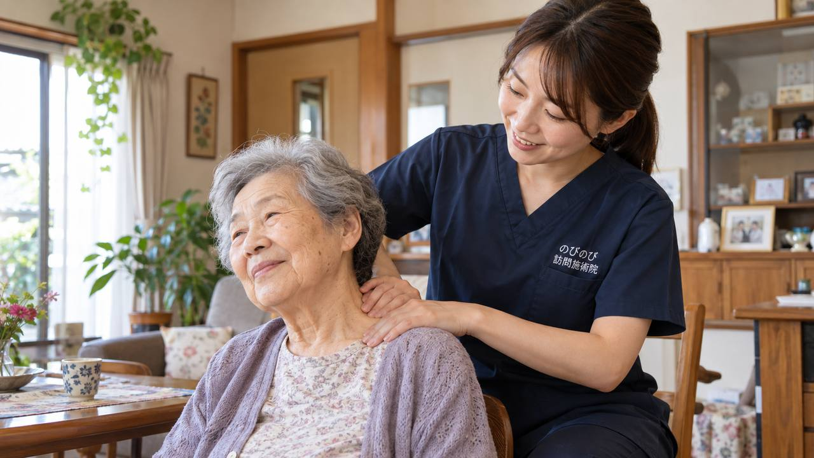

首や肩が重くて動かしづらい、肩から腕、手先にかけてしびれる、後ろを振り向くと痛む。年齢を重ねると、こうした首・肩の不調と腕のしびれを抱える方は珍しくありません。こりや痛み、しびれが日々の動作をつらくし、外出や趣味から足が遠のいてしまうこともあります。首・肩のこりや腕のしびれに訪問鍼灸マッサージができること、注意したいサイン、費用のことまでを、施術の現場からお伝えします。
この記事のポイント
首・肩のこりや痛み、腕のしびれがつらい高齢の方に、訪問鍼灸マッサージは鍼やお灸を軸に、こわばりをゆるめ血のめぐりを促すケアを行います。頸肩腕症候群や頸椎症などで医師が治療の必要を認めれば医療保険で受けられ、保険はすべて鍼灸で算定します。1回は総額3,950円、1割負担なら1回約395円。介護保険の限度額とは別枠です。ただし、急に片腕がしびれて力が入らない、ろれつが回りにくい、激しい頭痛をともなうときは、まず医療機関や救急へ。しびれは首の神経や別の病気が背景のこともあり、医師の診断が先になります。
前かがみの時間が、首から腕に出てくる
一日中パソコンに向かう、台所で下を向いて刻みものをする、洗濯物をたたむ。首を前に倒した姿勢は、思っている以上に肩や首の後ろに負担をかけます。頭の重さを支える筋肉がずっと引っぱられ、夕方になると首の付け根が石のように固くなる。なで肩の方や、もともと首が細い方は、その負担が腕のほうまで及びやすい傾向があります。
やっかいなのは、こりが腕や指先のしびれに変わっていくことです。肩から腕、ときには指先までジンとした感覚が広がり、首から肩、腕にかけての一連の不調は頸肩腕症候群と呼ばれることもあります。朝、枕が合わずに寝違えたところから長引いてしまう方、後ろを振り向く動作だけがつらい方など、出方は人によってずいぶん違います。
腕のしびれが強いときは、施術より先に受診を
ただ、しびれや痛みのすべてを施術で受けるわけではありません。腕や手のしびれが急に強くなった、力が入らずコップを落とす、手先の細かな動作が急にしづらくなった。こうしたときは、首の骨（頸椎）から出る神経が圧迫されているなど、医療機関で診るべき問題が隠れていることがあります。強いめまいやろれつの回りにくさをともなう場合も同じです。
首や肩のこりは筋肉のこわばりからくることが多いのですが、頸椎の神経からくるしびれは見きわめが必要です。迷ったときは、まず病院を受診してください。鍼やお灸はあくまで治療を支える立場で、順番を間違えないことを大事にしています。
伺ってまず確かめるのは、こりの広がり
お伺いして最初にみるのは、首まわりだけではありません。指で触れていくと、肩甲骨のあいだや背中の筋肉まで固くなっている方がほとんどです。首の一点だけを揉んでも楽にならないのは、こわばりが背中や腕までひとつながりになっているから。どの動きで痛みが出るか、どの姿勢が長いかをうかがいながら、その日ほぐす順番を決めていきます。
鍼やお灸は、こわばった筋肉をゆるめて血のめぐりをうながし、こりや重さを軽くしていきます。首だけでなく肩や背中まで含めて整えると、振り向く動作が楽になったと話される方がいます。あわせて、動かせる範囲を保つための機能訓練も行いますが、これは鍼灸に加えて行うもので、追加料金はかかりません。
通うのがつらくても、自宅で受けられる
首や肩が痛むと、治療に出かけること自体が重荷になります。訪問鍼灸マッサージは、医師が治療の必要を認めれば、医師の同意にもとづく医療保険（療養費）で受けられます。要介護の認定はいりませんが、医師の同意書は必要です。国家資格を持つ施術者がご自宅まで伺い、出張費はかかりません。
費用は1回の施術の総額で3,950円、そのうち1割負担の方で1回およそ395円です。週2回受ければ、1割の方でひと月およそ3,160円。しかもこの保険は介護保険の限度額とは別枠なので、デイサービスや訪問介護を使っていても、その枠を圧迫しません。内訳は「料金のページ」で詳しくご紹介しています。整形外科でリハビリを受けている方は、同じ部位・同じ病名だと医療保険を重複して使えない決まりがあるので、今の治療内容をうかがったうえでご案内します。
首・肩を楽に保つ、家での工夫
ふだんの過ごし方も、施術の効きを支えます。まず見直したいのが枕の高さで、高すぎても低すぎても、首の後ろが緊張したまま朝を迎えることになります。首や肩は冷やさない、痛くない範囲で肩をゆっくり回す、同じ姿勢を1時間も続けない。これくらいなら、ご本人だけでなくご家族も一緒に声をかけやすいはずです。訪問のたびに、その方の体に合った動かし方をお伝えしています。
こりが軽いうちに、こわばりを戻す
首や肩のこりは「よくあること」と受けとめられて、そのままにされがちです。けれど、こわばりが強くなって動かせる範囲がせまくなってからでは、元に戻すのに時間がかかります。背中から肩甲骨まわりまでほぐしていくと、回を重ねるうちに動かしやすさが戻ってきたと感じる方がいます。一方で、翌日には元の重さに戻ってしまうという方もいます。感じ方には個人差があります。こりや重さが軽いうちに、あるいは長引いているなら今からでも、こわばりを和らげておくことが、動かしやすい首と肩を保つ近道です。腕や手のしびれ全般が気になる方は、手足のしびれ・冷えのページもあわせてご覧ください。
訪問先でうかがったお話｜首・肩のこと
首や肩のケアでうかがっていると、施術の途中で「そこが凝ってる」とご自身で場所を言い当てられる方がいます。長くつきあってきた不調だからこそ、体のどこが重いかをよくご存じなのだと思います。
続けて受けている方からは、「前よりは楽になった」といった声をうかがうことがあります。反対に、天気が崩れる時期は「またガチガチになった」と話される方もいて、日によって波があるのが実際のところです。感じ方には個人差があります。
腕のしびれについては、こわばりがゆるむと感じ方が変わったと話される方がいる一方で、変わらないという方もいらっしゃいます。しびれが強まる、力が入りにくいといった変化があるときは、施術より先に医療機関へご相談いただくようお伝えしています。
よくある質問
首や肩のこりくらいで、保険で受けられますか？
首や肩のこり・痛み、腕のしびれが慢性的に続き、医師が治療の必要を認めれば、医療保険の対象になります。頸肩腕症候群や頸椎症などが目安です。まずは状態を見せていただき、対象になりそうかをお伝えします。無理にお勧めすることはありません。
腕や手のしびれもみてもらえますか？
はい。首や肩のこりに加えて、腕や手のしびれのご相談も承ります。神経に負担をかけている筋肉のこわばりを和らげることで、楽になる方もいらっしゃいます。ただし、急にしびれが強まる・広がる、力が入らないといったときは、施術より受診が先になります。
受診を先にしたほうがよいのは、どんなときですか？
急に片腕がしびれて力が入らない、ろれつが回りにくい、激しい頭痛やめまいをともなう、手の細かい動作が急にしづらくなった、といったときです。首の神経や別の病気が背景のことがあるため、まず医療機関や救急にご相談ください。しびれの原因は医師の診断が先になります。
頸肩腕症候群でも対象になりますか？
頸肩腕症候群による慢性的なこり・痛み・しびれについて、医師が鍼やお灸での治療が必要と認め、通院がむずかしければ、対象になる場合があります。首だけでなく、肩甲骨や背中、姿勢まで含めて状態を確かめてケアを組み立てます。
首や肩には、どんな施術をしますか？
首・肩・背中のこわばった筋肉を、鍼やお灸、手技でゆるめ、血のめぐりを促します。強く押すのではなく、まわりを含めて整えていきます。動かせる範囲を保つ機能訓練も、その方の状態に合わせて組み合わせます。これらに追加の料金はかかりません。
寝たままでも、首や肩をみてもらえますか？
はい。横になったまま、あるいは座ったままでも受けられます。首や肩が痛くて動かしづらい方でも、無理のない姿勢で受けていただけるよう、体の負担が少ない形で進めます。
整形外科に通院中でも受けられますか？
同じ部位・同じ病名では、医療保険のリハビリと鍼灸を同時に受けられない決まりがあります。今の通院や治療の内容をうかがったうえで、無理のない形をご案内します。まずは状況をそのままお聞かせください。
費用はどのくらいかかりますか？
1割の方で1回およそ395円が目安です（1回の総額3,950円に対する負担割合分）。別途の出張費や交通費はかからず、エリア内はどこでも同額です。お支払いは月ごとにまとめていただき、施術内容がわかる明細をお渡しします。